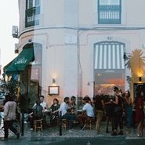
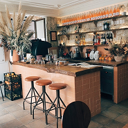
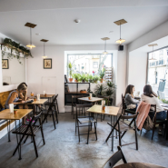

Why Lisbon?
Lisbon, the city of the seven hills
The legend has it that Lisbon was named Olissipo by the Romans, for its resemblance to the Roman capital. Just like Rome, Lisbon began its life as a humble settlement nestled among seven hills. However, it wasn't until the 17th century, in the writing of Frey Nicolao d'Oliveira, that Lisbon came to be called 'a cidade das sete colinas' - the city of seven hills.
You can still see traces of ancient Lisbon today. Beyond the array of shops with international brands, peaceful streetside cafes selling the iconic pastel de nata and world class restaurants with a variety of global cuisine, you can still wander the seven hills and see the city from above, taking in the rolling terracotta rooftops, the whitewashed walls and on the horizon, the soft blue sea.
CAFÉS
My favorite cafés in Lisbon

Café Janis
A lively all-day café with an outdoor terrace that serves everything you could want from breakfast and brunch to evening cocktails.
Address:
1A Rua Moeda
What I like about it
This is one of the best brunch spots in Lisbon but if you go at any time of day there will be something delicious on the menu!

Seagull Method Café
Everyone's favorite neighborhood cafe with a variety of breakfast and brunch options.
Address:
Rua da Palmeira 23
What I like about it
It's tiny! Not always easy to get a seat but it's such a cozy little place, the food is always tasty and the staff are so friendly.

Heim Café
The sister cafe of Seagull Method, this warm cozy cafe will take you from breakfast through to dinner with excellent coffee and locally-sourced wines.
Address:
Rua Santos-O-Velho 2 e 4
What I like about it
Just like Seagull Method, the owners are incredibly friendly and chatty. It has the best coffee in Lisbon!
Gallery
My photos from Lisbon